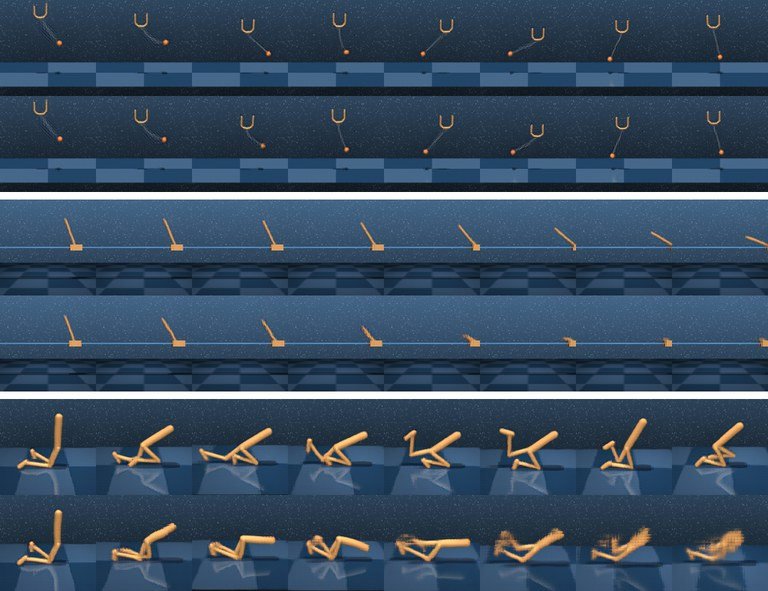

Two Roles in a World Model
AIR's specialization carries over from puzzles to a recurrent world model
TL;DR: In AIR, one network updates two latent states, and only one of the two updates sees the input. On puzzles, that alone was enough for the two states to take on different jobs. Here we use AIR as a world model that predicts video of simulated robots one step at a time, and the same split shows up again, both on a single task and in a model trained on all 18 tasks of DeepMind Control. Two caveats:
- To remember what a single frame cannot show, such as how fast something is moving, the model needs gradients through time. AIR's usual one-step gradient does not provide them.
- On a single task, one shared network is as accurate as two separate half-size networks; on all 18 tasks it is less accurate, and neither weight sharing nor depth alone explains the gap.
Setup
A world model predicts what an agent will see next, so that the agent can practice inside the model instead of in the real environment. It takes what the agent has seen so far and the action it takes, and predicts the next frame. Dreamer 4 is a recent example, and it has two parts. A tokenizer compresses each video frame into a handful of latent tokens. A large dynamics Transformer then predicts the next frame's tokens from the actions and the tokens of earlier frames, attending over all the frames that came before.


We replace Dreamer 4's Transformer with AIR, which updates two latent states with one network and lets only one of the two updates see the input. For the tokenizer we use a pretrained one from Nicklas Hansen's open-source Dreamer 4 implementation, frozen. The two states are zL and zH, and the input goes only into the update of zL. On puzzles the input is the same at every step. A world model is harder in three ways: a new frame arrives at every step; some things, like velocity, cannot be read off any single frame and have to be remembered; and when the model imagines the future, there are no frames at all.
The model has no attention over past frames, so its two states are its only memory. At each time step, we combine the current frame's latent tokens, the action and a task token into one input xt. The network then runs six updates (L, L, H, L, L, H), we read the prediction of the next frame from zH, and both states are handed to the next time step. We compare three ways of wiring a step:
We train every model in two ways: with AIR's one-step gradient, which stops the gradient at the end of each time step, or with backpropagation through time (BPTT) over 32 steps. For clarity, the animation shows one L-update followed by one H-update; the real model runs six updates per step (L, L, H, L, L, H). Model size and optimizer are AIR's defaults; we did not tune anything for accuracy.
1. The two states take on different roles
To test whether the two states do different jobs, we read the prediction from both of them. The prediction head is trained to read the next frame from zH; we apply the same head to zL as well. If the two states held the same information, the head would do about equally well on both. We call zL's error divided by zH's the readout ratio: a value near 1 means the states are interchangeable, and a large value means only zH holds the prediction.
The two states split the work whenever only one update sees the frame, whether or not they share weights. In air, reading the prediction from zL is hundreds of times worse than from zH with BPTT, and still at least 15 times worse with the one-step gradient. In sym, where the frame goes into both updates, the ratio stays at about 1 with the one-step gradient and about 2 with BPTT, in every seed. The two-network models split just like air.
This does not mean zL is empty: it holds information in a form the prediction head cannot use. A linear probe can still read the simulator state from it quite well, much like the scratchpad role zL played on puzzles.
The same split holds on every one of the 18 tasks of DeepMind Control. Cup-catch is a single task, so we also trained one model on all 18 tasks of the DMC Visual Control suite, with about 18 times as much data:
2. Memory needs gradients through time
AIR's one-step gradient never tells the model what to carry forward from earlier steps. With it, the loss at one time step never sends a learning signal back to earlier steps. On puzzles that is fine, because the puzzle is shown again at every step and nothing has to be carried over. In a world model it matters: a single frame shows where things are but not how fast they move, so the model has to carry that forward itself.
To measure memory, we test how well zH predicts the true physical state, positions and velocities, while the model imagines. We fit a linear probe from zH to the simulator's state on some episodes and score it on others with R² (1 is perfect, 0 is guessing the average). As a baseline, the dashed line applies the same probe to a single true frame. A single frame shows where things are but not how fast they move, so it scores only about 0.43. A zH that scores well above this line must be carrying velocity forward from earlier steps, even though, while imagining, it never sees the frame at all.
In our runs, only backpropagation through time taught the model to remember. With the one-step gradient, every model stays fairly close to the dashed line: zH knows only a little more than a single frame shows. With BPTT, air reaches an R² of 0.81, and its error on the first predicted frame drops about 9 times. The 18-task models follow the same pattern: air trained with BPTT reaches 0.50, while the one-step models reach 0.38–0.39 and the frame alone 0.40.
3. Accuracy
To measure accuracy, each model sees 8 frames and then imagines the next 24 on its own. The figure shows what the imagined frames look like, and the table gives the error over those 24 frames. All models here are trained with BPTT.

| BPTT model | cup-catch | 18 tasks |
|---|---|---|
| air | 0.0201 | 0.0517 |
| sym | 0.0289 | 0.0699 |
| hrm_half (two networks, same parameters) | 0.0211 | 0.0396 |
| hrm (two networks, 2× parameters) | 0.0303† | 0.0542 |
| air, 2-layer block (half the parameters) | – | 0.0495 |
| repeat the last frame | 0.236 | 0.165 |
Mean squared error between the predicted and the true latent tokens of each frame, averaged over the 24 imagined frames and held-out test windows; lower is better. While imagining, the models get the actions but no frames. “Repeat the last frame” predicts that nothing moves. Mean over 3 seeds; † two seeds (the third diverged at the start of training).
Sending the frame only into L makes the model more accurate than sending it into both updates. air's error is 30% lower than sym's on cup-catch and 26% lower on the 18 tasks.
One shared network matches two half-size networks (hrm_half) on a single task, but not on 18 tasks. On cup-catch, air does about as well as hrm_half, which has the same number of parameters (0.0201 against 0.0211). On the 18 tasks, hrm_half is 23% more accurate, and on 17 of the 18 tasks even its worst seed is more accurate than air's best.
Neither weight sharing nor depth alone explains this gap. hrm_half differs from air in two ways: its two networks have separate weights, and each is half as deep. A 2-layer air, which matches hrm_half in depth and compute, reaches 0.0495, still 25% above hrm_half. Conversely, hrm, which has separate weights at air's depth, reaches 0.0542, no better than air (its three seeds range from 0.046 to 0.059). In our runs, separate weights helped only when each network was shallow.
Within a shared network, sharper specialization does not improve accuracy. The 2-layer air specializes less than the 4-layer one (a readout ratio of 51 instead of 90), yet it is equally accurate.
We also compare against a causal Transformer like the one we replaced, which has to feed its own predictions back in to imagine. It follows Dreamer 4's dynamics model without its noise objective, with twice air's parameters and the same data and number of steps. Since it has no state of its own to imagine in, each prediction goes back in as the next frame. To compare fairly, we run our models the same way here.
On cup-catch, the Transformer is better for the first 11 frames and worse after that. By the 24th frame its error is 44% higher than air's, and over all 24 frames it is 19% higher, with every Transformer seed worse than every air seed.
On the 18 tasks, the pattern is the same, with a larger early advantage for the Transformer. Its first-frame error is less than a third of air's and it stays ahead for 14 frames, but by the 24th frame its error is 25% higher. Over all 24 frames it ends up about the same as air and 13% worse than hrm_half. It also depends much more on the task: it is about twice as good as air on cartpole and three times as good on reacher, but three times worse on cheetah and four times worse on pendulum. The 18-task Transformer is a single seed (its three cup-catch seeds are within about 5% of each other), and we did not tune it.
Imagining in its own latent state, rather than from its own predicted frames, further reduces air's error. Fed back, air's error is 0.0331 on cup-catch and 0.0909 on the 18 tasks; in its own state it is 0.0201 and 0.0517, and it outperforms the Transformer from the 9th frame on cup-catch and from the 10th on the 18 tasks.
What it means
- Where the input enters decides the roles. The split we saw on puzzles survives continuous dynamics, changing frames and imagination, and it does not need separate weights.
- How the gradient flows decides what gets remembered. HRM, TRM and AIR all cut the gradient between supervision steps: HRM and AIR keep only a one-step gradient within a step, and TRM backpropagates through its last full recursion. This keeps training inexpensive and is sufficient when the input does not change. A world model has to carry information from one step to the next, so its gradient has to cross steps too. Here that took full backpropagation through time, at about twice the training time and three times the GPU memory.
- On a large, diverse task set, separate shallow networks are the most accurate. On the 18 tasks, hrm_half's error is 20–23% lower than that of one shared network, whether the shared network has its depth or twice it. Separate networks at full depth (hrm) do not help, so the advantage appears to come from combining separate weights with shallow networks.
- A recurrent state is most useful at long horizons. A Transformer that attends over all past frames predicts the next several frames more accurately, whereas the recurrent models accumulate less error over 24 frames, especially when they imagine in their own state.
Next steps
- Find out why separate weights help only when each network is shallow, by varying the depth of hrm's two networks.
- Find out how far back the gradient has to reach, by truncating backpropagation through time at 4, 8 and 16 steps instead of 32.
- Put the model to use the way world models are meant to be used: for planning, or for training a policy inside it.
Acknowledgments
Experiments ran on the RANGE cluster of the Center for Research Computing at Rice University, with compute provided through Prof. Anastasios Kyrillidis's group.